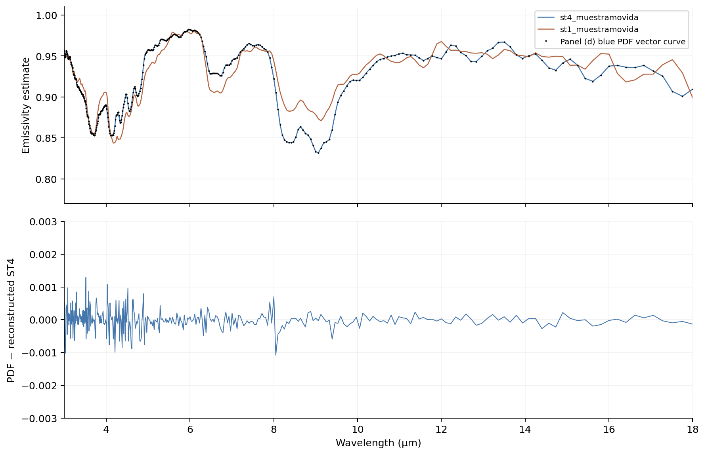
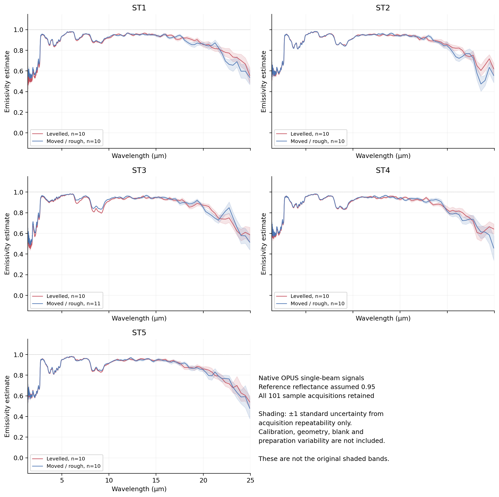
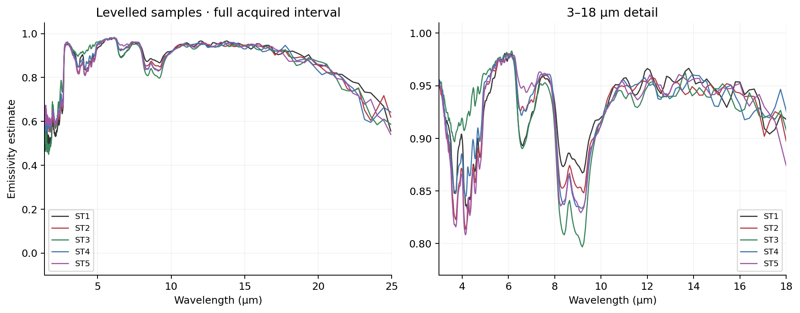
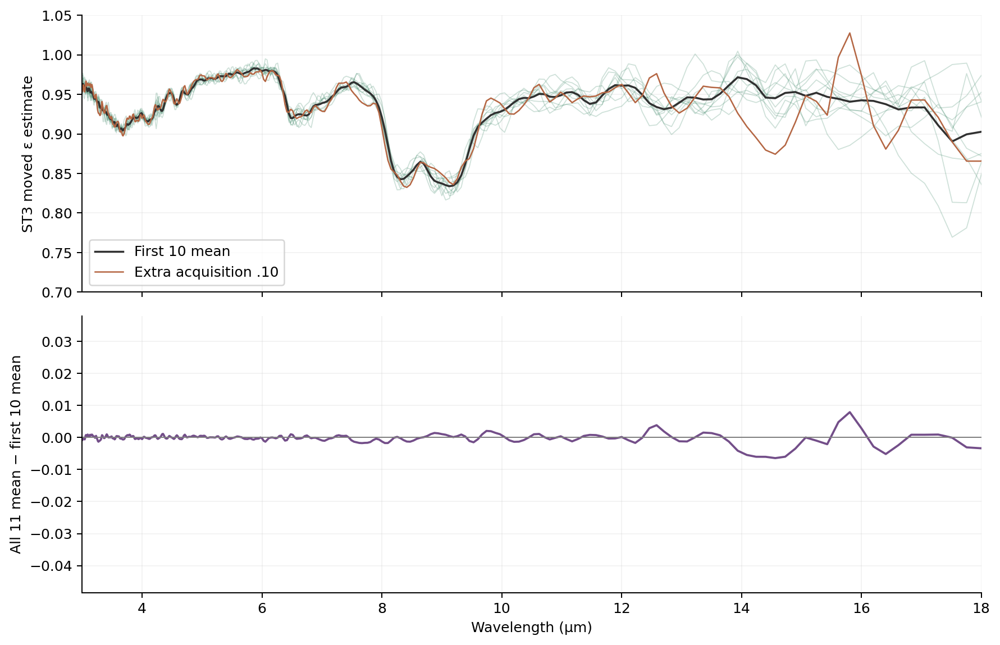
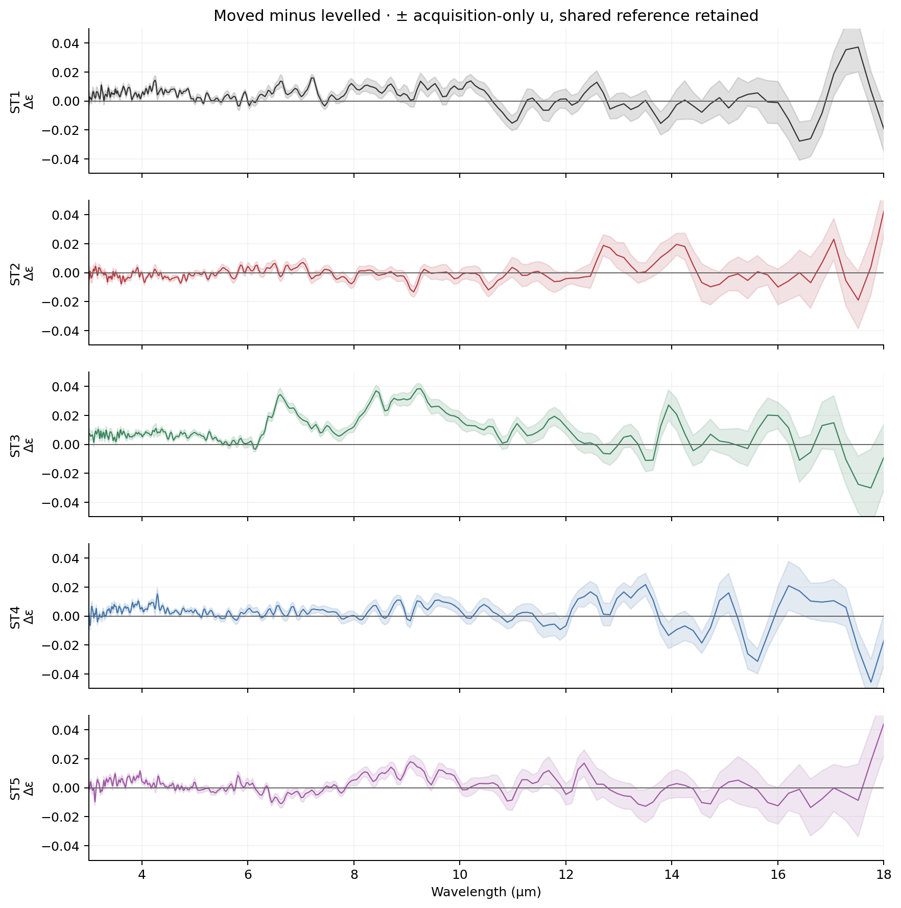
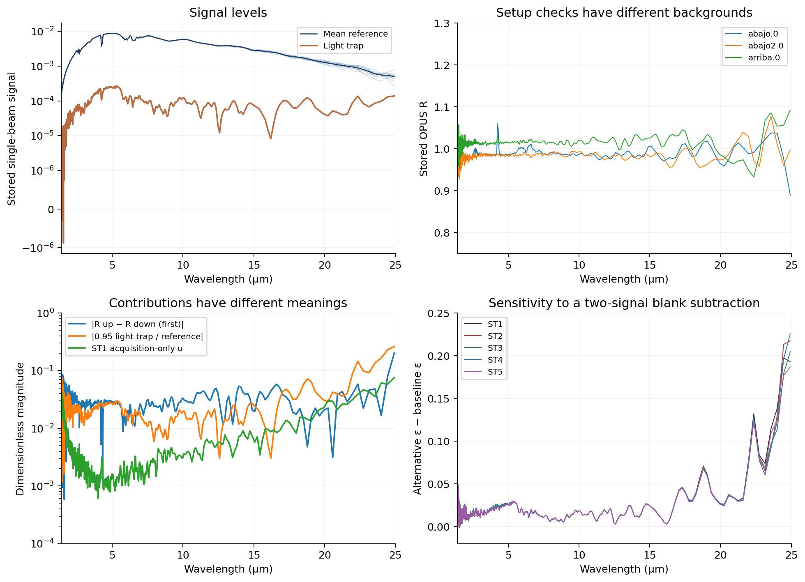

Measurement-data audit and first quantitative analysis
16 October 2026 · Datuak and ReflectivEmissiv.opju · working analysis
The supplied measurements make a quantitative reconstruction possible. The central curves in both draft figures can be traced to the native sample and reference signals. They also expose a mixed-quantity text export, an extra ST3 acquisition, and uncertainty contributions that need a clearer physical justification. The numerical results below use the draft’s stated reflectance-ratio model; they do not establish a complete calibration or independent replication of surface preparation.
This report supplements the earlier, pre-data scientific review. The original manuscript, original figures and that review remain unchanged. All 227 newly received input files are fingerprinted and preserved.
1. What was received and recovered
| Input | Count | Verified contents |
|---|---|---|
| Native Bruker OPUS files | 115 | Sample spectra, stored reflectance, phases and interferograms; reference spectra in 16 files |
| Text exports | 111 | Two numerical columns, 856 rows per file; numerical prefixes matched to their native blocks |
| Origin project | 1 | ReflectivEmissiv.opju, 9,738,104 bytes; readable formula and label fragments recovered, full worksheets not yet exported |
| Sample acquisitions | 101 | Five sample IDs, two named conditions; ten acquisitions per condition except eleven for ST3 moved |
| Reference acquisitions | 10 | st1_referencia.0–.9, shared by the reconstruction |
| Setup checks | 4 | lighttrap.0, refererencia_abajo.0, refererencia_abajo2.0, refererencia_arriba.0 |
The native files are more useful than the text exports: they retain spectral precision, acquisition settings and interferograms. These saved interferograms belong to coadded acquisitions; they are not an archive of every individual scan.
The OPUS reader reported no failed block parses or unmatched spectral blocks. It also retained 476 unclassified blocks, with undefined block labels in the inspected files. This is successful recovery of the spectra used here, not proof that every proprietary metadata field has been interpreted. The extraction uses brukeropus, with exact package versions recorded in the reproduction instructions.
2. The acquisition structure resolves part of the methods gap
All files report 8 October 2024. The four setup checks precede the reference series; the sample measurements then run from 13:22:25 to 14:04:21, in the recorded GMT+2 time zone. The reference series runs from 13:19:40 to 13:21:01. No later repeated reference series is supplied.
| Parameter | Recorded value | Consequence |
|---|---|---|
| Instrument | IFS66V/S | The instrument can now be named from its native metadata |
| Requested and recorded sample scans per repeated acquisition | 10 | Ten files normally contribute 100 coadded scans in total, not 100 independent repeat measurements |
| Background scans | 100 | A background is reused; this is not a fresh independent 100-scan reference for every file |
| Scans in each setup-check acquisition | 100 | Distinguish these from the ten-scan repeated sample/reference acquisitions |
| Nominal resolution | 16 cm⁻¹ | The smaller output-grid spacing is not the resolving power |
| Spectral grid | 6997.2215625 down to 401.16375 cm⁻¹, 856 points | Corresponds to approximately 1.42914–24.92748 μm |
| Grid step | 7.7146875 cm⁻¹ | Wavelength spacing is nonuniform; do not average wavelength bands by simply counting points |
| Apodization / zero filling codes | B3 / 2 |
Preserve the instrument codes; confirm their exact settings in the acquisition protocol |
| Instrument status | Warnings IT Test 1 in all files |
Request the underlying instrument-test record; the string alone does not identify a failure or its effect |
The muestra and muestramovida filenames are mapped to the manuscript’s levelled and rough/moved conditions through the PDF comparison. They do not document independent bed refilling, grain sizes, quantitative roughness, bed depth or moisture conditioning. There is one named sequence per condition, not ten independent preparations.
For ST3 moved, .0 is recorded at 13:46:03 and .1 at 13:47:00; the remaining acquisitions are approximately nine seconds apart through .10 at 13:48:22. The intervening pause is recorded, but its reason is unknown.
3. A concrete export problem, with an intact native measurement
st1_muestra0.txt is different from the other exports. Its numerical values match the native reflectance block (r), whereas all other 110 text exports match their native single-beam sample-spectrum blocks (sm), within the 0.5 × 10⁻⁶ rounding tolerance of six decimal places.
The same file has unrelated Notepad++ release notes appended after its 856 numerical rows. There are 37 nonblank trailing lines, beginning at line 857. No other supplied export has this problem. The originals have not been edited; the audit records the trailer separately.
Averaging this reflectance column with nine single-beam columns and dividing by a single-beam reference would mix different quantities. In a direct numerical demonstration, that erroneous calculation produces an emissivity as low as −7.39 within 3–18 μm. This is a processing failure, not a physical result.
The native st1_muestra.0 contains the correct single-beam block, so no measurement has been lost. The reconstruction uses it. The resulting ST1 curve agrees with the original PDF: the supplied export problem does not demonstrate that Irene’s plotted ST1 curve is wrong. The imported or pasted worksheet history remains to be verified.
4. Reconstruction and traceability to both original figures
For each condition, the baseline calculation is
where is the native sample sm signal and is the ten-acquisition st1_referencia series. The factor 0.95 is the manuscript/template assumption, not a newly recovered calibration certificate. Interpreting the result as directional emissivity requires the opacity and measurement-geometry conditions discussed in the earlier review.
All 111 repeated sample/reference files also satisfy the identity r × common background ≈ sm, with a maximum absolute residual of 5.1 × 10⁻¹⁰ in stored signal units. The common background is the native rf block in st1_muestra.0. Thus, OPUS’s stored r is a ratio to an instrument background; it is not already the final reference-series-calibrated sample reflectance.
The first ten acquisitions of each sample condition reproduce the ten main curves in Bothmeasurements.pdf and the five main curves in All_together.pdf. The comparison extracts vector drawing coordinates from the PDFs, calibrates their axes and compares all ten candidate conditions over the fixed interval 3–18 μm. Every curve is closest to its expected condition; the largest root-mean-square difference is below 0.00038 emissivity. PDF coordinate quantization, drawing simplification and export rounding prevent an exact array equality claim. Insets and graph-object linkage are not independently audited by this main-curve comparison.
In panel (d), the blue curve matches ST4 moved with RMS difference 0.000308, compared with 0.0155 for ST1 moved. This is strong numerical evidence that “ST1 rough” is a copied legend label. The newly generated figure labels it ST4; the original PDF is retained unchanged.

The new Matplotlib figures are supplied as PNG previews and vector PDFs for LaTeX. They reproduce the central spectral structure using native precision. Their clearly labelled acquisition-only bands are not presented as reproductions of the original full shaded bands.


5. ST3 has an additional acquisition that should not disappear silently
For ST3 moved, the first-ten mean matches the PDF with RMS difference 0.000226 over 3–18 μm. Including all eleven gives 0.00122. Testing each possible single omission selects .10 as the omitted acquisition that best reproduces the plot. This is a numerical inference about the plotted selection; it does not establish why that selection was made.
Including .10 changes the mean spectrum by up to 0.00791 over 3–18 μm, and 0.0445 over the full acquired grid. The baseline analysis retains all eleven, while a separate epsilon_first_10 column preserves the figure-reproduction comparison. An acquisition should only be rejected on a documented quality criterion, not because ten was the template’s default count.

6. What can already be learned from the spectra
The following values are uniform-wavelength band averages of the baseline model. Integration uses the native grid transformed to wavelength, trapezoidal weights and interpolated exact band endpoints. No smoothing, clipping, atmospheric correction or mineral fitting has been applied.
| Sample | Levelled ε, 3.5–5 μm | Levelled ε, 8–10 μm | Moved − levelled, 8–10 μm | Acquisition-only , 8–10 μm |
|---|---|---|---|---|
| ST1 | 0.8744 | 0.8905 | +0.00765 | 0.00140 |
| ST2 | 0.8598 | 0.8743 | −0.00181 | 0.00148 |
| ST3 | 0.9263 | 0.8425 | +0.02746 | 0.00139 |
| ST4 | 0.8818 | 0.8637 | +0.00513 | 0.00116 |
| ST5 | 0.8546 | 0.8624 | +0.00956 | 0.00158 |
ST3 is spectrally distinctive. Its levelled spectrum has the highest mean emissivity in 3.5–5 μm and the lowest in 8–10 μm. The distinction changes with spectral region, so a single overall ranking of “more emissive sand” is inadequate. This supports targeted composition and grain-size characterization, but not a mineral assignment from these spectra alone.
The surface-condition differences are wavelength dependent. ST3 has the largest positive 8–10 μm difference, about 2.75 percentage points. ST1 and ST3 also differ by approximately +0.0308 and +0.0283, respectively, in the 1.5–2.5 μm band. The original statement that the curves collapse at low wavelength needs qualification. These differences exceed the corresponding acquisition-only repeatability estimates; that observation is not a test of preparation equivalence or proof of a causal roughness mechanism.
Over the much broader 3–18 μm interval, the levelled means are tightly grouped, approximately 0.925–0.930. Broad averages obscure the stronger band-specific differences. Likewise, a small signed difference can conceal compensating positive and negative features; the downloadable difference table also reports RMS spectral differences.

The ten or eleven sequential acquisitions characterize within-run variability. Possible serial dependence, drift and the lack of independently prepared beds limit their interpretation. No p-values, population confidence intervals or general roughness-independence claims are reported. The supplied reference sequence ends more than 40 minutes before the final sample acquisition, so later reference drift cannot be measured from this set alone.
7. What the original uncertainty formula reveals
The OPJU binary contains readable worksheet formula fragments. They identify sample and reference means and standard deviations, division by , a light-trap signal, Infragold reflectance and uncertainty, an up/down reflectance difference, reflectance, emissivity and an error-bar column. The repeated uncertainty expression is
sqrt((O*AD/Z)^2+(AB*M/Z^2)^2+(AE*M/Z)^2+AH^2+(AC/Z*AD)^2)The neighbouring literal formula and label fragments support this mapping:
| Column | Recovered role or expression |
|---|---|
| M / N / O | Sample mean / standard deviation / N/sqrt(10) |
| Z / AA / AB | Reference mean / standard deviation / AA/sqrt(10) |
| AC | Light-trap signal |
| AD / AE | Infragold reflectance / its uncertainty |
| AF / AG / AH | Down / up reflectance / AG-AF |
| AI / AK | M/Z*AD / 1-AI |
| AJ / AL | Quadrature expression / copied error-bar value |
This is partial recovery from binary text, not a full worksheet export. The stored constants, final cell values, masking, recalculation status and graph bindings remain unverified. The locally compiled liborigin reader fails at this OPJU file’s compressed header; its successful compilation is not successful project extraction. OriginLab documents conversion through Origin Viewer as a route to the older OPJ format. A native CSV export with formulas/comments is preferable for the final audit.
There is nevertheless a useful cross-check. Using the native light-trap signal and the difference between refererencia_arriba.0 and the first refererencia_abajo.0 stored reflectances reproduces the characteristic PDF band widths closely. For ST1 levelled, the 3–18 μm RMS discrepancy is about 0.00016–0.00017 for assumed Infragold uncertainty values of 0, 0.01 or 0.02. These alternatives cannot be distinguished reliably from the PDF. Substituting refererencia_abajo2.0 gives a much poorer RMS agreement, about 0.0065 in the exploratory comparison. These are candidate reconstructions, not recovered calibration constants.
The median ST1 PDF half-band is about 0.0334 over the native points in 3–18 μm, while the acquisition-only standard uncertainty has median 0.00169. The original band is therefore not explained by scan repeatability alone. Its inclusion of setup/blank terms is scientifically consequential.
Four points need resolution before calling that band a standard or expanded uncertainty:
- For , the reference-mean sensitivity is . The recovered second term omits , although the recovered
ABexpression is a reference standard error. Verify the live worksheet before changing it; do not silently copy the expression into the new uncertainty budget. - A measured up/down difference is not automatically a standard uncertainty. Its physical origin, distribution, treatment as correction or bound, and correlation with other terms must be declared. These setup files also have different native background spectra; their
rvalues are not ratios to one common background. - A light-trap signal can indicate a systematic additive contribution. Adding its whole magnitude in quadrature around an uncorrected central result is a modelling choice that needs justification. It is not interchangeable with a blank correction.
- The calibration certificate, wavelength-dependent reference reflectance, uncertainty distribution, coverage factor and covariance are absent. A scalar 0.95 and a readable formula do not supply them.
8. Reference, blank and spectral-range diagnostics
The light-trap-equivalent reflectance averages approximately 0.0250 over 3.5–5 μm and 0.0125 over 8–10 μm. Those magnitudes are comparable with several sample/preparation differences. The first up/down reflectance difference has RMS magnitude about 0.0270 and 0.0267 in those bands, respectively.
A deliberately separate sensitivity scenario calculates
This assumes the same additive blank applies to both signals, which has not been established for this sphere configuration. It is plotted to show why the treatment matters, not adopted as a corrected result. Reference and sample gains/settings, sphere substitution effects and the protocol must be checked before choosing an appropriate measurement model.

Long-wavelength individual-acquisition estimates sometimes leave [0,1]; all ten condition means remain within it. Nothing is clipped. At the edge of the acquired grid, acquisition-only standard uncertainties reach approximately 0.057–0.118, depending on condition, even before adding calibration/setup contributions. The long-wave end should remain visible as a diagnostic, but the full 1.429–24.927 μm acquisition interval is not thereby certified as an equally reliable analysis range.
The 3–18 μm interval is used here for comparison with the draft, not as a validated acceptance mask. A defensible final mask should combine reference validity, signal levels, repeatability, atmospheric residuals and the optical model. The short-wave edge is also noisy. Neither smoothing nor physical clipping can establish validity.
9. Uncertainty and thermal weighting in the new analysis
For the baseline ratio, with independent acquisition sequences and fixed , the pointwise acquisition-only standard uncertainty is
For the difference between moved and levelled conditions, the reference is shared:
The shared-reference contribution is propagated once; two independent reference error bars would overstate that part of the difference uncertainty. For integrated bands, the code integrates each acquisition and each reference perturbation before estimating variability. This retains the observed cross-wavelength covariance instead of treating 856 spectral points as 856 independent experiments. It still assumes the acquisitions are independent for the calculation and excludes unmeasured drift and preparation variability.
A first thermal illustration uses Planck weighting at 300 K within 8–14 μm, applying the room-temperature spectral model without claiming its temperature dependence is known:
| Sample | Levelled band estimate | Moved band estimate |
|---|---|---|
| ST1 | 0.9294 | 0.9314 |
| ST2 | 0.9212 | 0.9213 |
| ST3 | 0.9059 | 0.9200 |
| ST4 | 0.9168 | 0.9210 |
| ST5 | 0.9164 | 0.9201 |
These are directional band estimates under the same calibration and opacity assumptions. They are not total emissivities, hemispherical emissivities or measurements at an independently verified 300 K material temperature. Four decimal places facilitate numerical comparison, not a claim of four-decimal absolute accuracy.
10. Concrete changes and remaining author questions
Ready for the next manuscript revision: specify the recorded instrument and 16 cm⁻¹ nominal resolution; explain ten acquisitions of ten scans; document the ST3 selection; correct the regenerated ST4 legend; replace qualitative “collapse” and unconditional independence claims with band-resolved comparisons; separate acquisition repeatability from the full uncertainty model.
Still needed from Irene or the laboratory: final Origin worksheet exports with formulas/comments and graph-to-column bindings; the reason for ST3’s extra acquisition and its selection; whether any signal correction was applied before importing; the Infragold calibration record; the meaning and reference/background settings of the up/down checks; treatment of light-trap response and instrument warning; sample provenance, grain-size/phase information, moisture, bed depth/backing and independent preparation records.
The next scientific step is to resolve the measurement model and uncertainty budget, then decide whether an independent preparation/reference sequence is needed. Mineral decomposition, peak fitting and a blanket equivalence claim would be premature.
Reproducible outputs
The analysis directory contains the immutable-input manifest, full acquisition table, native-array extraction, per-export matching audit, PDF traceability results, ST3 selection comparison, numerical tables, six Matplotlib figures in PNG/PDF, an interactive-viewer dataset and executable scripts. The README records reproduction commands and limitations. All calculation outputs come from native instrument signals; PDF drawing coordinates serve as checks only.